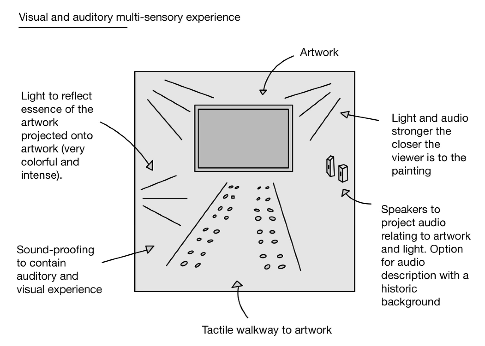
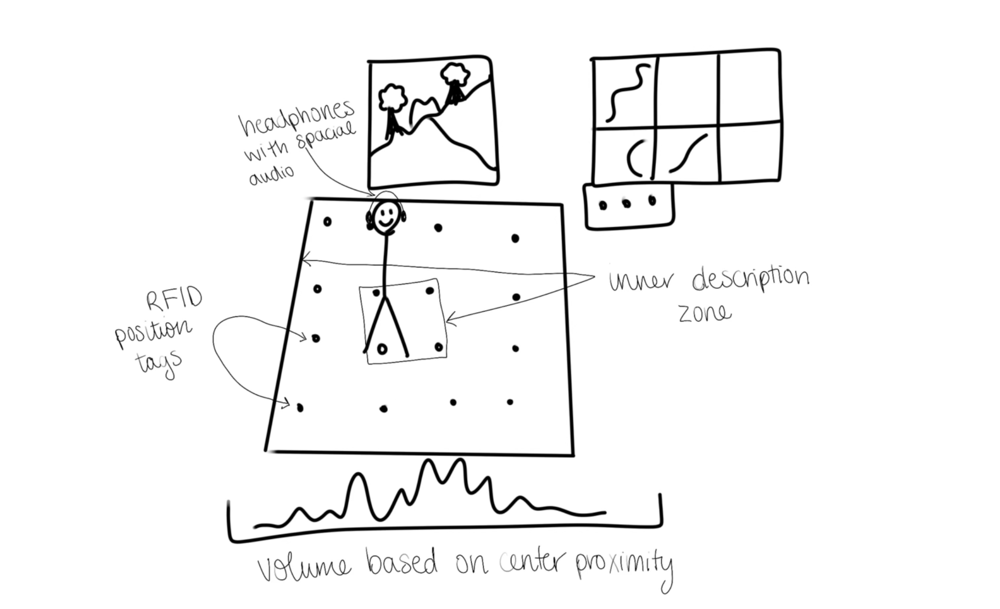
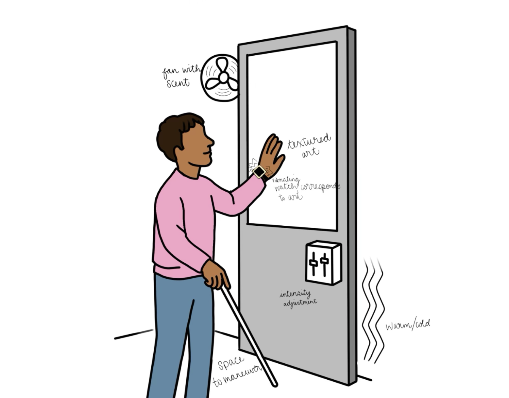
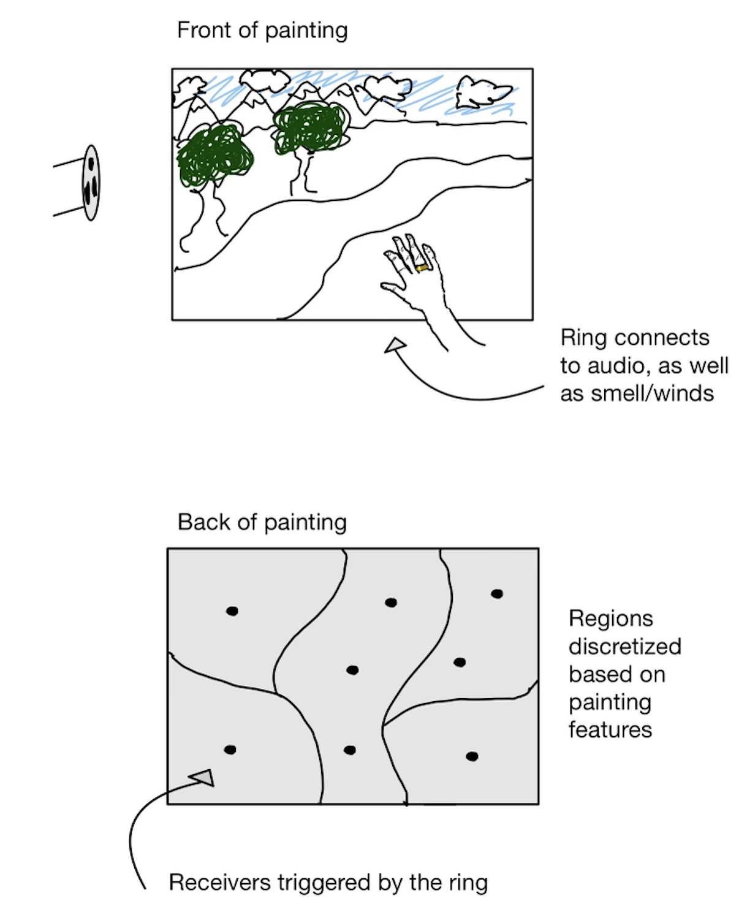
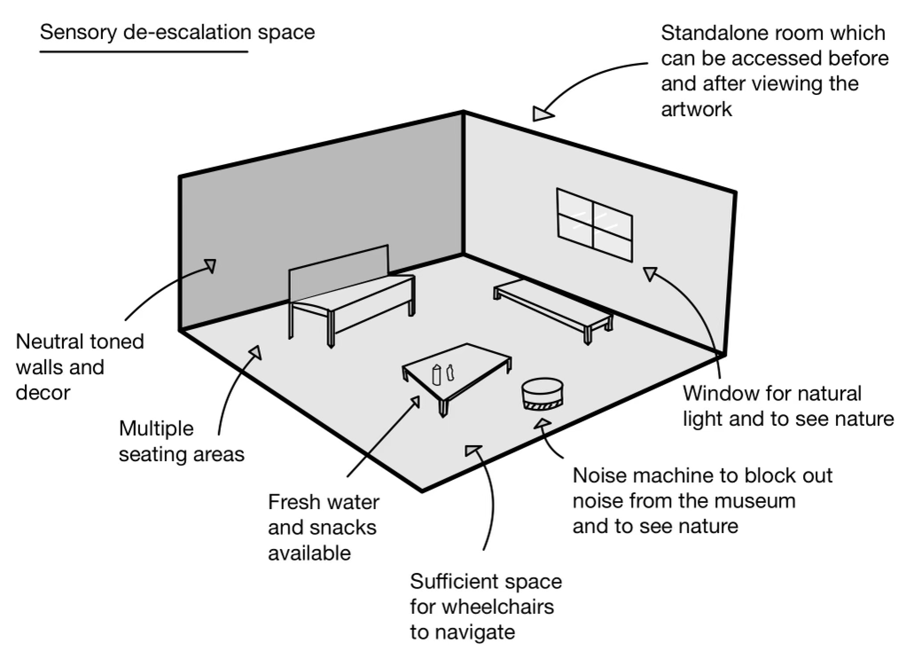
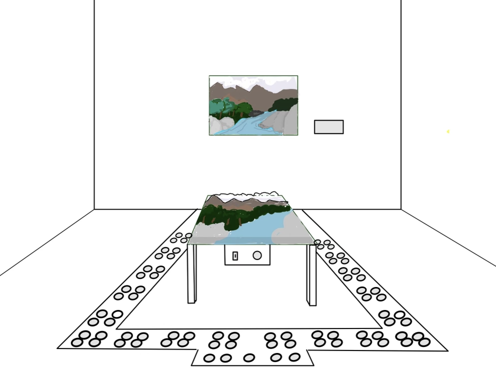
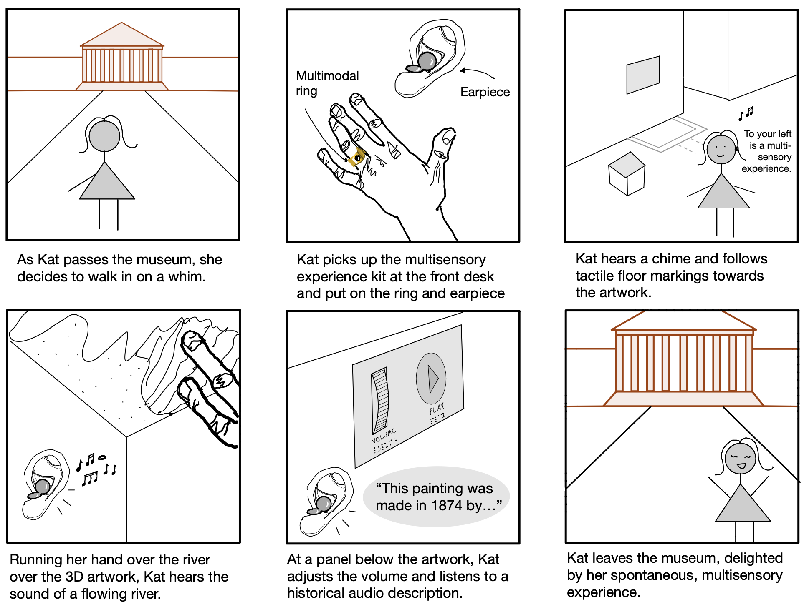
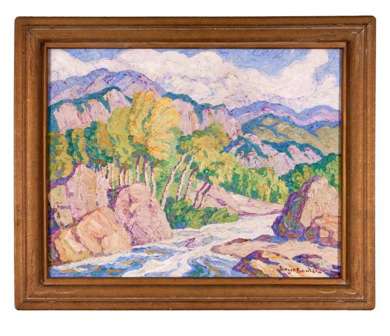
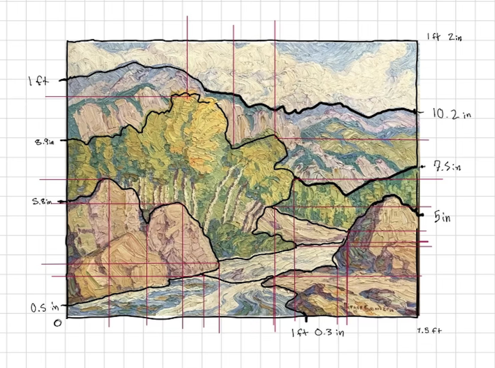

![A group of five cartoon-style avatars standing and posing cheerfully. From left to right: a smiling girl with long brown hair wearing a pink top and light jeans, a playful girl with curly hair, glasses, a green top, and black shorts sticking out her tongue, a calm girl with straight black hair wearing a blue North Face shirt and multicolored pants, a smiling boy with a beanie and white long-sleeve shirt waving, and a smiling girl with dark brown hair in an orange top and flared jeans pointing outward.](pics/team.png)
Cori Grandisson, Zahra Cheeseman, Harris Proctor, Zach Zerbe, Erin Liedeker
Our needfinding began with a deep dive into first-person accounts of museum visits by people with
vision impairments and other sensory needs. We scoured research databases (Google Scholar, the ACM
Digital Library), listened to podcasts, and watched video testimonials such as user reflections on
impromptu
visits
and multi-sensory installations. One RNIB survey respondent captured the core desire perfectly:
“If they [museums] were completely independently accessible from the front door until you are
ready
to leave, it would mean I could just drop into a museum if I had a free afternoon - go in, by
myself, and come out again an hour later, walk home and just be able to reflect.”
Armed with these narratives, we met with Varsha to refine our understanding of what remained
unaddressed.
Her guidance pointed us toward gaps around tactile features and semantic mapping in audio descriptions,
and
she suggested we corroborate our insights with on-site observations.
We then spent several sessions at the FAC (Fine Arts Center), moving slowly through entryways,
galleries,
and interactive displays. We noted key spatial constraints, narrow doorframes that forced visitors to
pause,
display cases mounted too high for comfortable touching, and poorly announced tactile elements that left
some visitors wondering if they’d encountered a malfunction rather than an intentional feature. We
recorded
these observations alongside visitor struggles with wayfinding, balance between openness and guidance,
and
the emotional juxtaposition of “shrines” that invite reverence but often discourage physical
interaction.
Synthesizing the literature, interviews, and site visits revealed three core themes in our target users’
experiences:
Desire for Spontaneity and Independence
Visitors long to “drop in” without booking tours or relying on an escort, what one participant called
“improvisation dream time” that “adds hugely to the quality of our lives.”
Value of Multisensory Engagement
Touching objects not only verifies their material reality but also evokes aesthetic pleasure and
intimacy
with history, “a shrine” becomes less distance, more connection. Audio guides that layer period music or
environmental sound (e.g., 1701 Lisbon described to fado excerpts) demonstrate the power of poetic,
context-rich narration.
Need for Clear Semantic Mapping and Restorative Spaces
Misaligned metaphors, like associating “warmth” with heat instead of sunlight, can confuse rather than
illuminate. Likewise, transitioning directly between interactive zones can overwhelm; participants in
“Speechless” emphasized returning to a neutral de-escalation room to process sensory input and reset.
![A digital affinity diagram titled ‘Sensory Considerations’ is organized into seven categories using color-coded sticky notes. The categories are:
1. Auditory Considerations – Notes mention ‘Soundproofed acoustics’ and ‘Not be built with modernistic glass.’
2. Visual Considerations – Includes ‘Very visual’ and ‘Very colorful.’
3. Tangible Considerations – Notes emphasize ‘Be able to touch artwork,’ ‘Use your cane to navigate the space,’ ‘Maximize tangible feedback,’ and ‘Physically/spatially Interactive.’
4. Multisensorial Approaches – Covers ‘Stimulate senses other than sight,’ ‘A neutral de-escalation space,’ ‘Adjustable intensity levels for sensory inputs,’ ‘Multiple interactive input methods,’ ‘Cohesive multi-sensory inputs,’ and the ability to ‘Pause or slow down sensory experiences.’
5. Patron Experience Goals – Focuses on goals like ‘Users stand at an artwork for more than 7-9 seconds,’ ‘Ability to give feedback,’ ‘Be able to talk out loud,’ ‘Spontaneous access,’ and ‘Increase time spent by patrons observing artworks.’
6. Expanded Interpretability – Highlights the importance of ‘Creative interpretation,’ ‘Accurate semantic mappings,’ ‘Personal interpretations,’ ‘Real-world experience alignment,’ and ‘Be able to reflect.’
7. Customizable Experience – Notes include ‘Understand artwork personally,’ ‘Unique experiences for blind or deaf patrons,’ ‘Individual personalization,’ and ‘Customize experience before visit (e.g., skip historical overview).’](pics/affinity.png)
Throughout our process, we iterated on an affinity diagram that triangulated these insights. Initial
clusters around “navigation,” “audio feedback,” and “tactile engagement” were refined into higher-order
needs, such as “independent entry,” “multi-modal stimulus,” and “semantic clarity”, after two rounds of
stakeholder validation (including further talks with Varsha and FAC staff). This rigorous, cyclical
needfinding ensures our prototype features, tangible contour lines, context-aware audio descriptions,
feedback prompts at tactile hotspots, and a dedicated de-escalation space, are solidly grounded in real
user
needs and have been stress-tested across multiple data sources.
Divergent Sketches
The next step in the design process was to create several divergent sketches based on the needfinding process. The aim of each sketch was to identify a central concept from needfinding and to design an accessible solution to it. Here, we provide each for our divergent sketches.1. Visual and auditory multisensory experience
 This sketch depicts a design which aims to create a visual and auditory multisensory experience to provide a solution to allow users to interact with multiple senses, to have a spontaneous and seamless experience, to interpret the artwork in a personal way and to be able to customize their experience. Features in the diagram include lights to reflect essence of the artwork projected onto the artwork which are very colourful and diverse, sound proofing to contain auditory and visual experience, immersive light experience, tactile walkway to artwork, light and audio stronger the closer the viewer is to the painting and speakers to project audio relating to the artwork with an option for audio description including historic background.
2. Spatial audio artwork experience

This sketch depicts a design which aims to create an auditory sensory experience allowing users to experience the artwork through moving their body through the space in front of the artwork. The space in front of the artwork contains RFID position tags allowing users to be tracked inside the grid and experience varying audios depending on their location, where the volume is greater closer to the center. The user must use headphones to hear the audio, and to reduce overstimulation and to allow for users to customize the noise level. Users can stand in a control panel to customise the settings for their experience.
3. Tactile, haptic, temperature and olfactorily multisensory art

4. Tactical customizable artwork experience
 This sketch depicts a tactile replica of the target painting sitting flat at a height accessible to wheelchair users. At the front center of the replica sits an NFC tag that allows users to hear an audio description of the target painting. Surrounding the replica platform on the ground are tactile strips that allow visually impaired users to identify the perimeter of the tactile replica.
5. Sensory De-escalation Space

This sketch aims to provide a solution to needs grouped by multisensorial approaches. We identified from multiple user accounts that users with disabilities often need a break from over stimulation or opportunity to calm the senses before, after or during the museum experience. Features in the diagram include standalone alone room which can be accessed before and after viewing the artwork, neural toned walls and decor, multiple areas to sit including couches and benches, fresh water and snacks available, sufficient space for wheelchairs to navigate, and noise machine to block out noise from the museum to make the room quiet.
Convergent Sketches

Following the separate creation of the divergent sketches, we each presented our divergent sketches to the group explaining our ideas and thought process. We evaluated each sketch and created a convergent sketch which incorporated the ideas of each convergent sketch that we liked. As a group, we liked the idea of using NFC tags, as it would allow us to create a dynamic experience of the different features of the art and which could allow users to customize their experience by controlling the settings and areas of interest of the art. We decided that as auditory and tactile sensory experiences were a common theme throughout the divergent sketches, and as these are diverse senses which could provide an interesting and stimulating experience for users, those would be the sensory experiences that would be prominent in our final project. In order to combine these senses seamlessly, we decided on a design which mounts NFC tags on the underside of a tactile, 3D replica of the painting sitting flat at a height accessible to wheelchair users. This allows users to feel the textures in the painting whilst hearing associated sounds. The design includes a bar at the bottom of the diorama for users to customize their experience by hearing an audio description with historic details and adjusting the volume. Around the diorama are tactile strips indicating its perimeter for blind and low vision users, and a sufficient amount of space for users to navigate around the artwork.
The final step of the process before the creation of the prototype is creating the storyboard. We
envisioned how a user, named Kat, would interact with this artwork from passing the museum to exiting
the museum. Kat is a blind person that uses a cane. We have included the following 6 frames:

Frame 1: Outside the Museum
As Kat passes the museum, she decides to walk in on a whim.
We highlight here that Kat has the ability to walk into a museum spontaneously and access the artwork
without a
previously reserved tour, a need found during our initial research for the needfinding.
Frame 2: Front Desk Interaction
Kat picks up the multisensory experience kit at the front desk and puts on the multimodal ring and
earpiece.
Frame 3: Chime and Navigation
Kat hears a chime and follows tactile floor markings towards the artwork.
The chime indicates to Kat the location of the multimodal experience. The tactile markings allow her to
further identify
where the artwork is and understand how to walk around the artwork.
Frame 4: 3D Artwork Exploration
Running her hands over the textured 3D artwork, Kat hears the sound of a flowing river as she passes her
hand over the
river.
Kat is able to touch the artwork and interact with the art physically and spatially, a need that our
group found during
needfinding. The associated audio provides further solutions to the multisensorial considerations that
we determined.
These diverse senses which relate to the feature of the art provide Kat with the opportunity to
interpret and experience
the art in a personal way.
Frame 5: Interactive Control Panel
At a panel below the artwork, Kat adjusts the volume and listens to an audio description, learning about
the artwork’s
history.
Kat can customize her experience by being able to adjust the volume to her preference and hear about the
artwork if she
wants, which is a central theme found during needfinding.
Frame 6: Leaving the Museum
Kat leaves the museum, delighted by the spontaneous, multisensory experience.
For our prototype, we selected an art piece titled Mountain Stream, Big Thompson Canyon by Birger
Sandzen. We selected this artwork because it is a very textured piece containing multiple different
regions including a river, mountains, rocks, and trees. These can have different tactility and audio
associated with them, allowing us to demonstrate our dynamic, multimodal design.

Creation of physical, tactile diorama
We began by identifying 8 different regions in the paintings. We found audio clips relating to
each
region (for example an audio of flowing water for the river), and bought materials including rocks, faux
plants, resin and cotton, to use for each region. We superimposed a grid and dimensions onto the
painting, allowing for an accurate recreation of the artwork, which is a feature found during
needfinding.

We then recreated the artwork onto cardboard,
filling in each region with the tactile materials we acquired. We first created a draft with less
accurate measurements and by placing the materials in the sections to verify the overall composition of
the artwork and that we had sufficient materials.

After determining that the dimensions and material is sufficient for the diorama through creating the
draft, we create the accurate representation of the painting. The first step was to create a scale
version of the painting, and accurately map out the regions. Risers were created out of cardboard for
the tree and rock section to create accurate varying levels. Each section was then designed and
implemented: large rocks for the mountainous section, small rocks for the rock beds, glass stones and
epoxy for the river, moss and artificial leaves and branches for the trees, and poly-fil for the sky.
Coding NFC Tags to Create Auditory Experience
We started with apple starter code for making apps that interface with NFC tags. That provided a great
starting point already capable of scanning the payload data from nfc tags. From there we simply edited
the code to save the NFC tag text data as a string. We then created a hashmap from those strings to
audio files, which allowed us to responsively play audio associated with nfc tags. From there we simply
edited the UI from the start code into an interface which better suited our purposes.
Finalised Prototype
The finalised prototype includes an accurate representation of the artwork with NFC tags embedded in the
design, allowing users to feel the tactile artwork and scan the tags with their phone and hear an
associated audio to that section. The final installation will include a tactile perimeter around the
diorama to allow for blind and low vision users to navigate around it. We have included a video to
demonstrate the use of our accessible display: